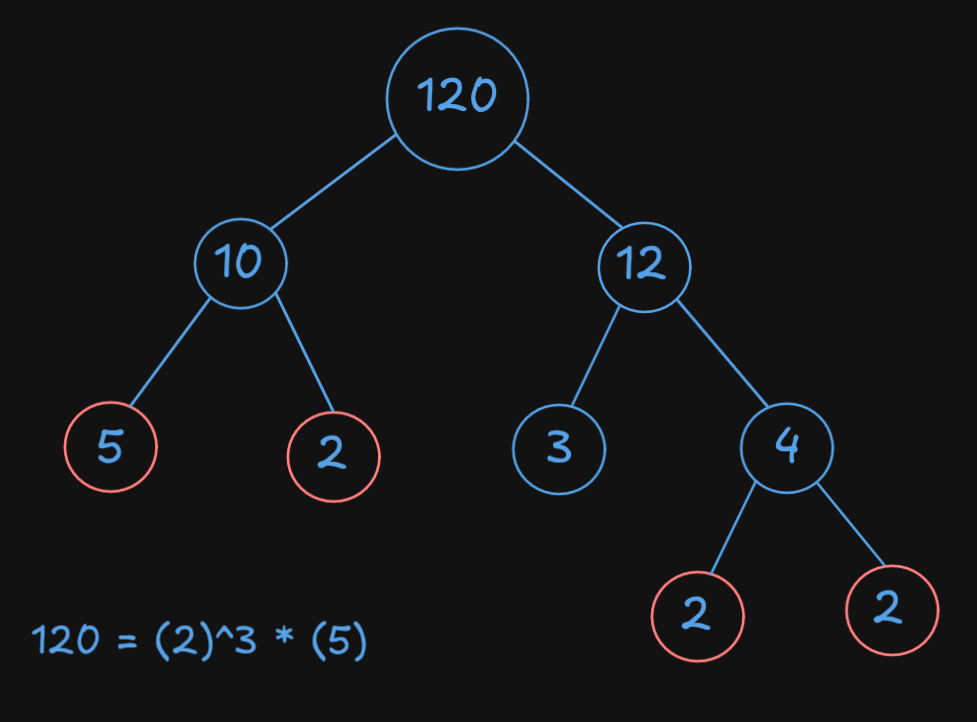

The Fundamental Theorem of Arithmetic states that every positive integer a ≥ 2 is either a prime or a product of primes.
When an integer is non-prime, it's called a Composite
Thus, any positive integer a ≥ 2 can be decomposed uniquely into its Canonical Form, also known as Prime-Power Factorization.
FactorizationFactorization is the process of breaking down a number, expression, or object into factors—simpler elements that, when multiplied together, give the original thing.
Let a be a positive composite integer. The canonical representation of a is
a = p1k1 ·
p2k2 ·
p3k3 ...
Where p1, p2, p3 ... are the primes that when multiplied result in a (and k1, k2, k3 ... are their powers respectively).
We can find the canonical decomposition of a composite number using a factor tree. 
This combination of primes (in this case 2 and 5) is the only way we could represent the number 120 using prime numbers.
Previous Next